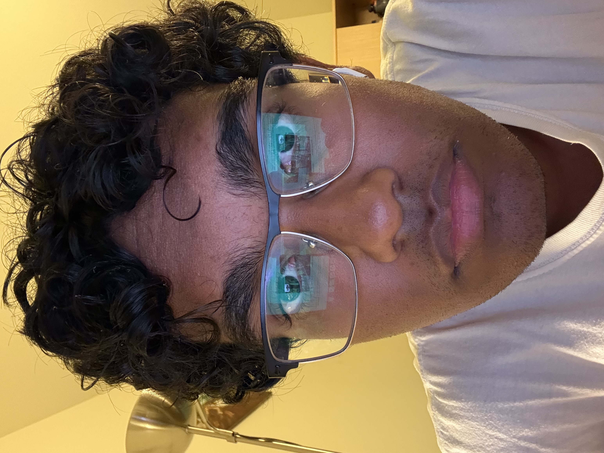
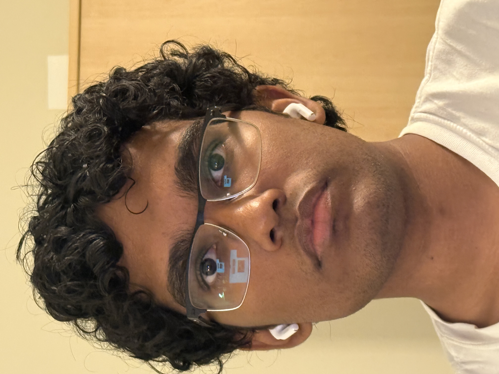
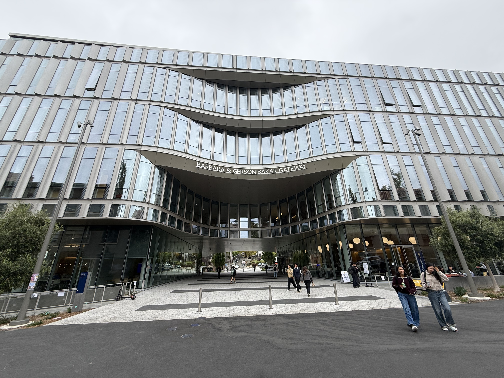
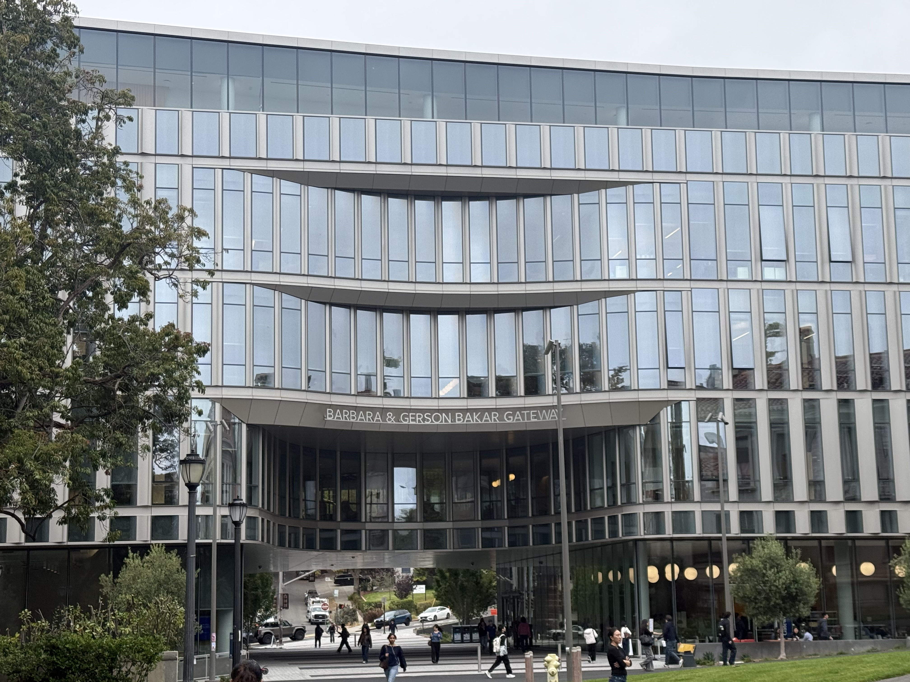

Project 0: Becoming Friends with Your Camera
Gautam Bhooma · CS 180 · Fall 2026
Selfie: The Wrong Way vs. the Right Way


The second photo seemingly looks better than the first, likely because lighting is more "natural", rather than being from the phone/laptop's blue light. Additionally, being close up proportionally increases the size of parts of your body that are close to the lens. This makes unnatural proportions, which are indistinguishable in the zoomed-in picture.
Architectural Perspective Comparison


This comparison highlights the same effect as the previous one, with features on the building being more accentuated in the close-up photo. This is in part due to the angle, but also because being closer highlights the fundamental depth of the building. The perspective is stronger, as far details shrink much faster, building depth.